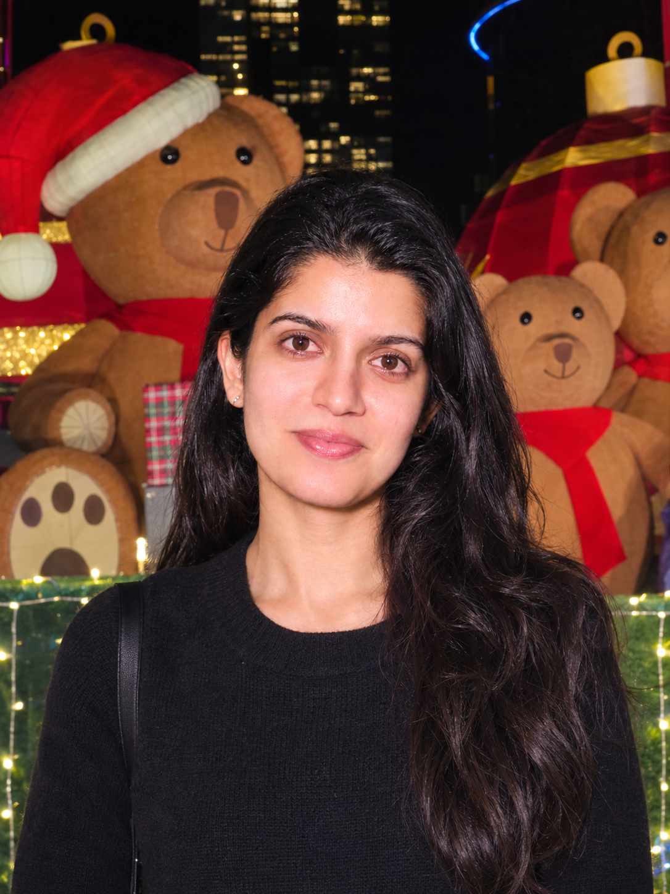

PhotoNilufer Tamatgar
AI Researcher, A*STAR · Singapore
I am an AI researcher and engineer at A*STAR's Institute of Advanced Intelligence and Computing. I develop and fine-tune generative models, including transformer, diffusion and graph-based architectures, and I use supervised fine-tuning, preference optimization and ranking-based objectives to make them more controllable and reliable.
I apply this work to AI for drug discovery. The central problem is learning from very few labelled examples: when only a handful of measurements exist, how do you make a model's top-ranked outputs more likely to be right? My methods are evaluated on real experimental data, and my work has been presented at KDD and at ICLR and NeurIPS workshops.
Publications
From Structure to Function: Preference Alignment for Function-aware Protein Inverse Folding Poster
Co-first author. Efficient preference learning for aligning inverse folding models with functional measurements.
From Structure to Function: Preference Alignment for Function-Aware Protein Inverse Folding
Precision Inverse Folding: From Low-Order Mutant Measurements to Higher-Order Variant Prioritization
Uses low-order mutant measurements to prioritize higher-order variants and raise the success rate of top-ranked candidates.
Deployment of Random Forest Algorithm for prediction of ammonia in river water
Machine Learning Approach for Prediction of Ammonia in Freshwater Bodies
Skills and tools
Generative AI and LLMs
Supervised fine-tuning, Preference optimization, Diffusion models, Autoregressive transformers, LangChain, RAG (familiar)
Model development
Graph neural networks, Ranking and learning-to-rank, Top-ranked candidate selection, Low-data learning, Experiment design and benchmarking, Multimodal data curation
ML frameworks
PyTorch, PyTorch Geometric, JAX (familiar)
AI for science
AlphaFold 3, ColabFold, ProteinMPNN, LigandMPNN, ESM-IF, ADFLIP, RFdiffusion, ESM, SIFT and SIFT4G, PyMOL, Chimera
Software and Systems
Python, C++, Embedded C, Linux and Bash, HPC and GPU, Git, Docker, Flask, Streamlit
Education
MSc, Computer and Communication Engineering
Nanyang Technological University. EEE Excellence Award.
BTech, Electronics and Communication Engineering
Manipal Institute of Technology, MAHE. Specialization in Machine Learning and Data Science.